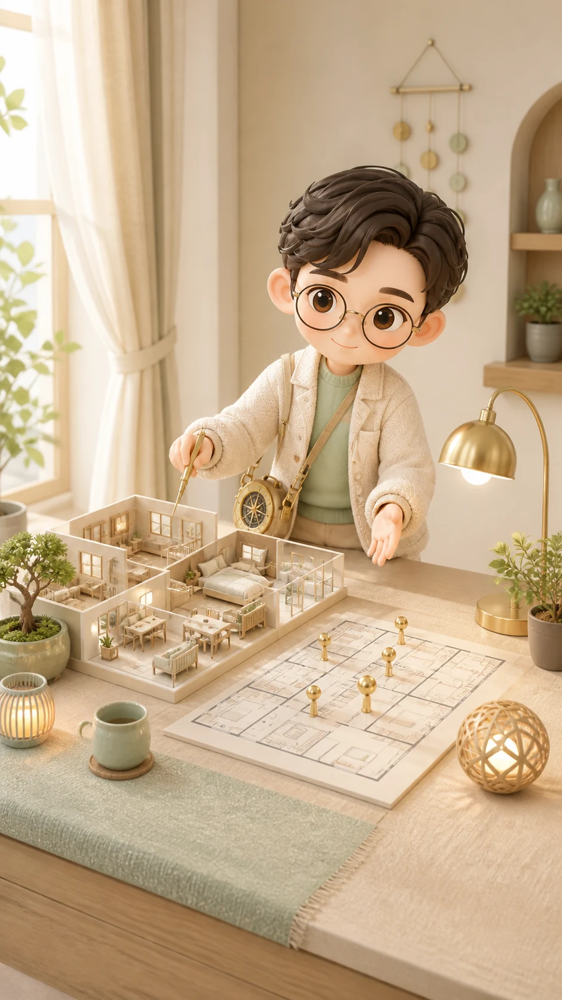

선택한 항목
이 집, 나랑 찐으로 결 맞아?
선택한 리포트 항목을 한 줄 결론, 근거, 행동으로 나눠 확인합니다.

목록에 없는 항목입니다
05 목록에 있는 항목만 상세로 열 수 있어, 첫 번째 항목으로 이동했습니다.
상세 접근 기준
운영 환경에서는 로그인, 결제 권한, 리포트 버전을 서버에서 확인한 뒤 이 본문을 제공합니다.
한 줄 결론
집의 좋고 나쁨보다 내 생활 리듬과 맞는지를 먼저 봅니다.
확인한 기준
근거는 공간과 입력값을 나눠 봅니다
숫자나 확률이 없는 항목은 그래프 대신 흐름 카드로 정리했습니다.
상세 풀이
현실에서 이렇게 체감될 수 있습니다
이번 주 액션
바로 손볼 수 있는 것부터
주의할 선택
겁주기보다 확인 방법
연관 항목
앞뒤 흐름도 같이 보면 좋습니다
다른 상세